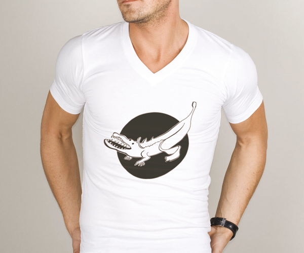
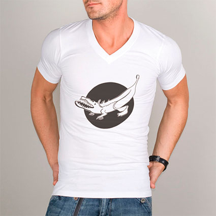
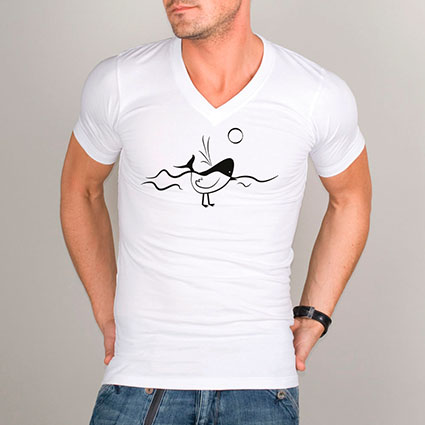
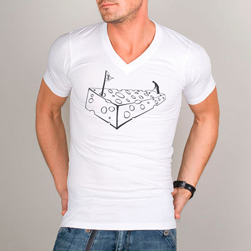

Informations sur le projet

En dernière année de mon cursus à l’école secondaire de Saint-Luc de Liège, j'ai réaliser plusieurs visuels de T-shirt en noir et blanc pour financer le voyage rhétos. Comme consigne j’avais juste à combiner deux éléments différents par leurs rapprochement physiques.
Plusieurs de mes visuels ont été par la suite racheter par une société s’intéressant à eux.
Voici un aperçu de ces visuels.


